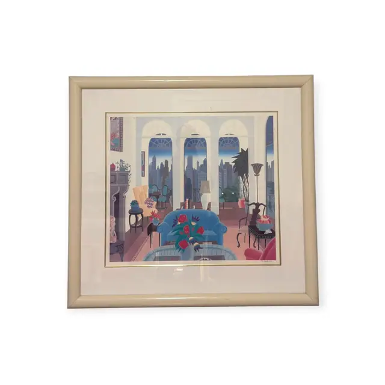
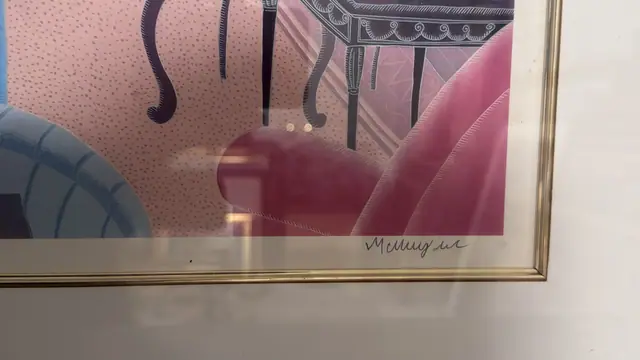
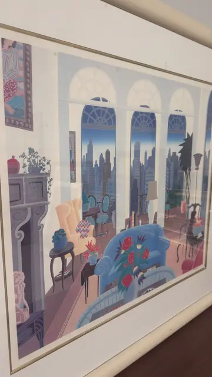
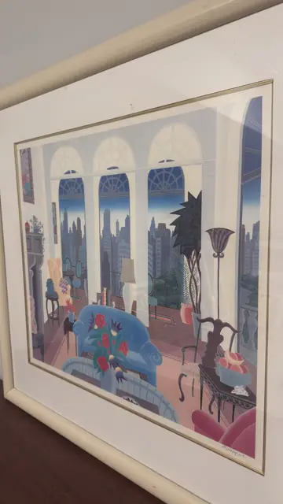

Paintings & Prints
Art Deco Salon with Manhattan Skyline, McKnight, Signed, Framed
McKnight · 1980s to 1990s
Price Upon Request




About the Item
McKnight. Three tall arched windows with radiating fanlights fill the back wall of an elegant salon and open onto a dusk-blue skyline of setback skyscrapers and a terrace balustrade. Inside, everything is flattened into crisp decorative shapes: a powder-blue settee heaped with stylised red roses, a scalloped peach wing chair, a grey neoclassical fireplace, a spiky black palm, a fluted uplighter and a bowl of peaches on a wrought-iron table. The palette is pale and cool - lilac, dusty pink, powder blue, mint - laid down in flat, evenly graded areas typical of a hand-pulled serigraph. Float-mounted on a broad cream mat with a gold fillet in a pale ivory frame. Medium: serigraph (screenprint) on paper. Signed lower right, on the sheet below the image, reading "McKnight". Inscribed on the reverse or mount: McKnight (cursive signature, lower right below the image). Condition: No foxing, tears or discolouration visible through the glass. Considerable reflection and a photographer's silhouette across the glazing in most views.
Details
- Creator:
- McKnight
- Creation Year:
- 1980s to 1990s
- Dimensions:
- Height: 34.4 in (87.38 cm)
Width: 36.6 in (92.96 cm)
outside of frame - Medium:
- serigraph (screenprint) on paper
- Period:
- 20Th
- Condition:
- Offered in the condition shown in the photographs.
- Reference Number:
- VO-121
- Documentation:
- no certificate photographed
- Gallery Location:
- McKnight (cursive signature, lower right below the image)